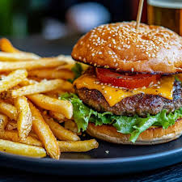
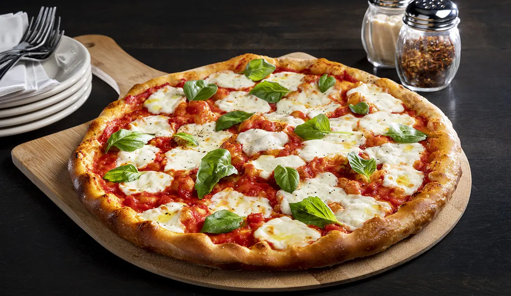
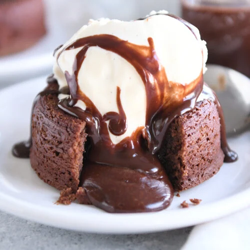

Fresh reviews, real food, pure vibes
Your go-to spot for honest food reviews and tasty recommendations.

Juicy beef patty, melted cheese, crisp lettuce, and toasted buns simple but unbeatable. The fries were golden, crispy, and perfectly salted. Sometimes, the classics really are the best.

Thin crust, fresh mozzarella, tangy tomato sauce, and a drizzle of olive oil. Every bite felt like a slice of Italy. Simplicity that hits different when it’s done right.

Warm, gooey chocolate center surrounded by a soft sponge pure dessert heaven. Served with vanilla ice cream that melted just right. End your meal on a high note.
Hey there! I am Claire who loves great food and honest reviews. Whether it’s a hidden café or a classic meal, I’ll tell you what’s worth your bite.